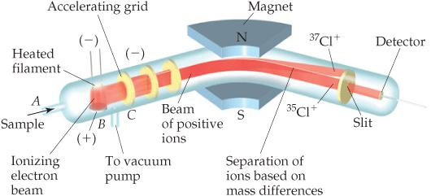
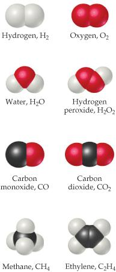
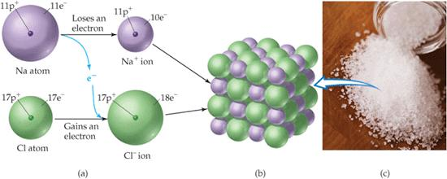
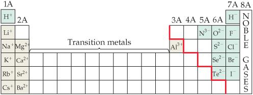

Capítulo 3 · Átomos, moléculas e iones
La teoría atómica de la materia
La pregunta por la naturaleza última de la materia recibió una respuesta cuantitativa cuando Dalton propuso, hacia 1805, que toda sustancia consiste en partículas diminutas de varias clases, correspondientes a los distintos elementos, a las que llamó átomos (Pauling 1988, cap. 2; Brock 2015, cap. 3; Atkins 2015, cap. 2).{#sec-teoria-atomica} Su razonamiento partió de su interés meteorológico por el aire, pues para explicar la homogeneidad atmosférica propuso partículas autorrepulsivas de cada gas que no se afectan entre sí, modelo del que derivó la ley de las presiones parciales (Brock 2015, cap. 3).
Quiso además construir una base cuantitativa para la química: midió densidades de gases y calculó pesos atómicos relativos desde análisis publicados, suponiendo que cuando dos elementos forman un solo compuesto este es binario, del tipo AB (Brock 2015, cap. 3). La teoría, publicada en su New System of Chemical Philosophy de 1808, se resume en cuatro postulados (Pauling 1988, cap. 2; Brown et al. 2012, sec. 2.1).
Los elementos están hechos de partículas diminutas e indivisibles; los átomos no se crean ni se destruyen; los de un mismo elemento son idénticos y los de elementos distintos difieren en masa y propiedades; y los compuestos se forman combinando átomos en razones de números enteros pequeños (Pauling 1988, cap. 2; Oriakhi 2021, 19; Brown et al. 2012, sec. 2.1). La figura Figura 4.1 reproduce los símbolos con que Dalton representó los elementos y sus combinaciones binarias (Brock 2015, fig. 9).

Nota. Figura reproducida de (Brock 2015, il. 9), © Oxford University Press (2015), reutilizada con fines educativos de estudio propio. Cortesía: Roy G. Neville Collection, Othmer Library of Chemical History, Chemical Heritage Foundation.
Estos postulados explican las leyes ponderales ya conocidas. La ley de conservación de la masa, de Lavoisier (1785), afirma que no hay cambio medible de masa durante una reacción (Pauling 1988, cap. 2; Brown et al. 2012, sec. 2.1). La ley de constantes proporciones, de Proust (1799), añade que toda muestra de un compuesto contiene sus elementos en las mismas proporciones ponderales (Pauling 1988, cap. 2; Brown et al. 2012, sec. 2.1).
La ley de proporciones múltiples establece que cuando dos elementos forman más de un compuesto, los pesos de uno que reaccionan con un peso fijo del otro están en razón de números enteros pequeños: el monóxido de carbono usa el peso 4 y el dióxido el 8, en razón 1:2 (Pauling 1988, cap. 2; Brown et al. 2012, sec. 2.1).
Oriakhi completa el cuadro con la ley de proporciones recíprocas: si dos elementos A y B se combinan por separado con una masa fija de un tercer D, las masas que consumen están en la misma razón que las de A y B entre sí, o en un múltiplo o fracción simple de ella (Oriakhi 2021, 19).
El descubrimiento de la estructura atómica
El átomo de Dalton parecía indivisible, pero a fines del siglo diecinueve varios experimentos revelaron su subestructura (Brown et al. 2012, sec. 2.2; Atkins 2015, cap. 2). En 1897 Thomson estudió los rayos catódicos, haces de partículas cargadas negativamente emitidas en tubos de descarga, y observó que se desvían en campos eléctricos y magnéticos (Brown et al. 2012, sec. 2.2; Atkins 2015, cap. 2). De la magnitud de la desviación midió la relación carga-masa del electrón, una partícula unas dos mil veces más ligera que el átomo de hidrógeno (Brown et al. 2012, sec. 2.2).{#sec-estructura-atomica}
En 1909 Millikan determinó con su experimento de la gota de aceite la carga del electrón, de magnitud 1,602 × 10⁻¹⁹ C, la llamada carga electrónica (Brown et al. 2012, sec. 2.2; 2012, sec. 2.3; Atkins 2015, cap. 2). En 1896 Becquerel había descubierto que minerales de uranio emiten radiación espontánea, la radiactividad, otra prueba de que el átomo tiene estructura interna (Brown et al. 2012, sec. 2.2; Atkins 2015, cap. 2).
En 1910 Rutherford estudió cómo las láminas metálicas finas esparcen partículas alfa: casi todas la atraviesan, pocas se desvían en gran ángulo y muy pocas rebotan, lo que condujo al modelo nuclear, con un núcleo denso y cargado positivamente que concentra casi toda la masa, rodeado de electrones (Brown et al. 2012, sec. 2.2; Atkins 2015, cap. 2; Pauling 1988, cap. 3).{#sec-particulas-subatomicas}
El modelo nuclear explicó además el fracaso de la alquimia: convertir plomo en oro exige arrancar del núcleo protones, lo que solo logran las reacciones nucleares y no las químicas (Atkins 2015, cap. 2). Las reacciones químicas dejan intactos los núcleos y no cambian la identidad de los elementos, de modo que toda la química procede de los electrones exteriores (Atkins 2015, cap. 2).
La estructura moderna del átomo: protones, neutrones y electrones
La estructura básica del átomo es un núcleo rodeado por una nube de electrones (Pauling 1988, cap. 2; Atkins 2015, cap. 2; Brown et al. 2012, sec. 2.3). El núcleo contiene protones, de carga positiva, y neutrones, eléctricamente neutros, llamados en conjunto nucleones y de casi idéntica masa (Pauling 1988, cap. 2; Brown et al. 2012, sec. 2.3). Los electrones, de carga negativa y unas dos mil veces más ligeros, se mueven en el espacio que rodea al núcleo (Pauling 1988, cap. 2; Atkins 2015, cap. 2; Brown et al. 2012, sec. 2.3).
Los protones están fuertemente retenidos en el núcleo (Atkins 2015, cap. 2). El número atómico, Z, es el número de protones del núcleo y, en un átomo neutro, también el de electrones; determina la identidad química del elemento (Pauling 1988, cap. 2; Atkins 2015, cap. 2; Brown et al. 2012, sec. 2.3). El número másico, A, es la suma de protones y neutrones, A = Z + N, y la notación general escribe la superíndice y la subíndice a la izquierda del símbolo, \({}^{A}_{Z}\text{E}\) (Oriakhi 2021, 20).{#sec-numero-atomico-masico} Las propiedades de las tres partículas centrales se resumen a continuación (Oriakhi 2021, 19).
| Partícula | Ubicación | Masa (g) | Masa (uma) | Carga |
|---|---|---|---|---|
| Electrón | Fuera del núcleo | 9,110 × 10⁻²⁸ | 0,00549 | 1− |
| Protón | Dentro del núcleo | 1,673 × 10⁻²⁴ | 1,0073 | 1+ |
| Neutrón | Dentro del núcleo | 1,675 × 10⁻²⁴ | 1,0087 | 0 |
Los isótopos son átomos del mismo elemento, con igual número atómico pero distinto número másico por tener distinto número de neutrones (Brown et al. 2012, sec. 2.3; Oriakhi 2021, 21; Atkins 2015, cap. 2).{#sec-isotopos} Comparten las propiedades químicas, reveladas por los electrones, pero difieren en las físicas, vinculadas a la masa (Oriakhi 2021, 21).
La notación nuclear se extiende a los iones contando además los electrones: el calcio, con número atómico 20 y número másico 40, tiene veinte protones y veinte neutrones, y al formar el catión Ca²⁺ pierde dos electrones y conserva dieciocho (Oriakhi 2021, 20). En un anión la cuenta crece, pues el nitrógeno, con siete protones y diez electrones tras ganar tres, forma el N³⁻, y el mismo razonamiento reconstruye protones, neutrones y electrones de cualquier símbolo nuclear (Oriakhi 2021, 20). El hidrógeno tiene tres isótopos: el ordinario, un protón sin neutrones; el deuterio, un protón y un neutrón, que forma el agua pesada, unos 10% más densa que la ordinaria; y el tritio, radiactivo, con periodo de semidesintegración de 12,3 años (Atkins 2015, cap. 2).
Masas atómicas y peso atómico
Los elementos se ordenan por su número atómico, y los neutrones son solo acompañantes del núcleo: variarlos no altera la identidad química (Atkins 2015, cap. 2; Brown et al. 2012, sec. 2.4). Las masas de los átomos individuales son demasiado pequeñas para expresarse en gramos: un átomo de calcio pesa unos 6,64 × 10⁻²³ g (Oriakhi 2021, 22). Por eso se usa una escala relativa: el carbono-12 define doce unidades de masa atómica (uma), y una uma, 1,66054 × 10⁻²⁴ g, es un doceavo de esa masa (Brown et al. 2012, sec. 2.4; Atkins 2015, cap. 2).
La masa atómica relativa de un elemento compara la masa de uno de sus átomos con ese doceavo (Oriakhi 2021, 22; Brown et al. 2012, sec. 2.4). Como en la naturaleza los elementos son mezclas de isótopos, el peso atómico que se lee en la tabla es un promedio ponderado por la abundancia (Oriakhi 2021, 22; Brown et al. 2012, sec. 2.4).
Para calcular el peso atómico se multiplica la masa exacta de cada isótopo por su abundancia fraccionaria y se suman los productos (Brown et al. 2012, sec. 2.4; Oriakhi 2021, 23; Atkins 2015, cap. 2). El carbono natural, con 98,89% de carbono-12 y 1,11% de carbono-13, da (12,00000 × 0,9889) + (13,00335 × 0,0111) = 12,011 uma (Oriakhi 2021, 23). Este procedimiento vale para todos los elementos de la tabla periódica (Brown et al. 2012, sec. 2.4).
El espectrómetro de masas es el instrumento más exacto para medirlas: ioniza una muestra gaseosa, la acelera y la desvía en un campo magnético, separando las partículas según su masa y registrando su abundancia relativa (Brown et al. 2012, sec. 2.4; Atkins 2015, cap. 2). La figura Figura 4.2 esquematiza el aparato y las trayectorias de los isótopos del cloro (Brown et al. 2012, fig. 2.12).

Nota. Figura reproducida de (Brown et al. 2012, fig. 2.12), © Pearson Prentice Hall (2012), reutilizada con fines educativos de estudio propio.
La tabla periódica
La lista de elementos creció durante el siglo diecinueve y se buscaron patrones en sus comportamientos, esfuerzo que culminó en 1869 con la tabla periódica (Brown et al. 2012, sec. 2.5; Pauling 1988, cap. 5; Brock 2015, cap. 5; Atkins 2015, cap. 2).{#sec-tabla-periodica} Las filas horizontales se llaman períodos y las columnas grupos; los períodos tienen 2, 8, 8, 18 y 18 elementos, y el sexto, 32, separa catorce miembros (atómicos 57–70) al pie de la página (Brown et al. 2012, sec. 2.5).
Ordenados por número atómico creciente, los elementos muestran propiedades físicas y químicas periódicas: los metales blandos y reactivos litio, sodio y potasio aparecen cada uno tras un gas poco reactivo, helio, neón y argón (Brown et al. 2012, sec. 2.5; Atkins 2015, cap. 2). La tabla periódica es el instrumento más importante para organizar y recordar hechos químicos, pues los elementos de una columna, por compartir arreglos electrónicos periféricos, tienden a comportarse igual (Brown et al. 2012, sec. 2.5; Atkins 2015, cap. 2; Pauling 1988, cap. 5).
Las etiquetas de los grupos admiten varias convenciones: la norteamericana con A y B, la europea análoga y la de la IUPAC que numera del 1 al 18 (Brown et al. 2012, sec. 2.5). Los metales dominan la izquierda y el centro, brillan y conducen bien; los no metales, la superior derecha, separados por la línea escalonada; y los metaloides, sobre la línea, son intermedios (Brown et al. 2012, sec. 2.5; Atkins 2015, cap. 2).
Moléculas y compuestos moleculares
Solo los gases nobles se encuentran normalmente como átomos aislados; la mayor parte de la materia está hecha de moléculas o iones (Brown et al. 2012, sec. 2.6; Atkins 2015, cap. 2).{#sec-moleculas-compuestos-moleculares} Varios elementos existen en forma molecular, como el oxígeno del aire, cuyas moléculas tienen dos átomos y se escriben O₂, donde el subíndice cuenta los átomos; una molécula de dos es diatómica (Brown et al. 2012, sec. 2.6). Los elementos diatómicos normales son hidrógeno, oxígeno, nitrógeno y los halógenos: H₂, O₂, N₂, F₂, Cl₂, Br₂ e I₂ (Brown et al. 2012, sec. 2.6; Atkins 2015, cap. 2).
Los compuestos formados por moléculas se llaman compuestos moleculares y contienen casi solo no metales (Brown et al. 2012, sec. 2.6; Atkins 2015, cap. 2). El ozono, O₃, muestra cuánto importa la composición: es tóxico y de olor penetrante, mientras el O₂ es esencial e inodoro (Brown et al. 2012, sec. 2.6). Las fórmulas moleculares dan el número real de átomos en la molécula, y las fórmulas empíricas el número relativo en la razón entera mínima (Brown et al. 2012, sec. 2.6; Atkins 2015, cap. 2).{#sec-formulas-quimicas} El peróxido de hidrógeno, H₂O₂, tiene empírica HO; el etileno, C₂H₄, empírica CH₂; y el agua coincide en ambas, H₂O (Brown et al. 2012, sec. 2.6).

Nota. Figura reproducida de (Brown et al. 2012, fig. 2.18), © Pearson Prentice Hall (2012), reutilizada con fines educativos de estudio propio.
La fórmula molecular resume la composición, pero la fórmula estructural muestra qué átomo está unido a cuál, con líneas por enlace (Brown et al. 2012, sec. 2.6; Atkins 2015, cap. 2). Conocida la molecular se deduce la empírica, pero no al revés sin datos adicionales, y por eso algunos métodos de análisis conducen primero solo a la empírica (Brown et al. 2012, sec. 2.6).
Los modelos de bolas y varillas representan los ángulos entre enlaces con fidelidad, mientras los modelos de llenado de espacio muestran los tamaños relativos de los átomos (Brown et al. 2012, sec. 2.6). La figura Figura 4.3 compara ambas representaciones y muestra cómo las fórmulas químicas corresponden a las composiciones que representan [Brown et al. (2012), sec. 2.6; fig. 2.18].
Iones y compuestos iónicos
Algunos átomos ganan o pierden electrones con facilidad, y la partícula cargada resultante es un ion: catión si lleva carga positiva y anión si negativa (Brown et al. 2012, sec. 2.7; Atkins 2015, cap. 2).{#sec-iones-compuestos-ionicos} Los superíndices +, 2+ y 3+ representan la pérdida de uno, dos y tres electrones, y −, 2− y 3− su ganancia (Brown et al. 2012, sec. 2.7). Los átomos metálicos tienden a perder electrones y formar cationes, y los no metálicos a ganarlos y formar aniones; los compuestos iónicos, eléctricamente neutros, combinan así metales con no metales, como el cloruro de sodio (Brown et al. 2012, sec. 2.7; Atkins 2015, cap. 2).
Cuando un átomo de sodio reacciona con uno de cloro, se transfiere un electrón del primero al segundo, formando Na⁺ y Cl⁻, que se atraen y forman NaCl (Brown et al. 2012, sec. 2.7). La figura Figura 4.4 muestra la transferencia del electrón y la red tridimensional que resulta; los compuestos iónicos se forman así, por transferencia de electrones [Brown et al. (2012), fig. 2.21; sec. 2.7].
Sus iones se ordenan en estructuras tridimensionales, de modo que no existe una molécula discreta de NaCl y solo puede escribirse una fórmula empírica (Brown et al. 2012, sec. 2.5). Las cargas se equilibran: un Ba²⁺ por dos Cl⁻ (BaCl₂), y si las magnitudes difieren, el número sin signo de un ion es el subíndice del otro, como en Mg₃N₂ (Brown et al. 2012, sec. 2.7).

Nota. Figura reproducida de (Brown et al. 2012, fig. 2.21), © Pearson Prentice Hall (2012), reutilizada con fines educativos de estudio propio.
Además de iones simples como Na⁺ y Cl⁻ existen iones poliatómicos, átomos unidos pero con carga neta: el amonio, NH₄⁺, y el sulfato, SO₄²⁻ (Brown et al. 2012, sec. 2.7; Atkins 2015, cap. 2). Muchos iones buscan el mismo número de electrones que el gas noble más cercano: el sodio queda con diez al perder uno, como el neón, y el cloro con dieciocho al ganarlo, como el argón (Brown et al. 2012, sec. 2.7). La figura Figura 4.5 resume las cargas predecibles de los iones comunes a uno y otro lado de la línea escalonada (Brown et al. 2012, fig. 2.20).
La tabla periódica resume las cargas comunes: los grupos 1A forman 1+, los 2A 2+, los 7A 1− y los 6A 2− (Brown et al. 2012, sec. 2.7).

Nota. Figura reproducida de (Brown et al. 2012, fig. 2.20), © Pearson Prentice Hall (2012), reutilizada con fines educativos de estudio propio.
Nomenclatura de los compuestos inorgánicos
Los nombres y fórmulas de los compuestos son el vocabulario esencial de la química, y las reglas que los nombran constituyen la nomenclatura química (Brown et al. 2012, sec. 2.8; Atkins 2015, cap. 2).{#sec-nomenclatura-inorganica} Ante más de cincuenta millones de sustancias, se necesita un conjunto de reglas que conduzca a un nombre único e informativo basado en la composición (Brown et al. 2012, sec. 2.8). La división mayor es entre compuestos orgánicos, que contienen carbono e hidrógeno, e inorgánicos, el resto (Brown et al. 2012, sec. 2.8).
Los cationes metálicos llevan el nombre del metal, y si este forma varias cargas, se indica la carga con un número romano: el Fe²⁺ es hierro(II) y el Fe³⁺ hierro(III) (Brown et al. 2012, sec. 2.8). Los cationes de no metales terminan en -io, como el amonio (Brown et al. 2012, sec. 2.8). Los aniones monoatómicos se nombran con terminación -uro: cloro da cloruro, Cl⁻ (Brown et al. 2012, sec. 2.8). Los aniones que contienen oxígeno, los oxianiones, terminan en -ato en su forma representativa y en -ito en la que tiene un oxígeno menos (Brown et al. 2012, sec. 2.8).
Un ácido es una sustancia cuyas moléculas ceden iones H⁺ al formar una disolución acuosa, y se nombra según su anión (Brown et al. 2012, sec. 2.8; Atkins 2015, cap. 2). Los ácidos de aniones terminados en -uro cambian esa terminación por -hídrico y anteponen hidro-: CN⁻, el cianuro, da el ácido cianhídrico (Brown et al. 2012, sec. 2.8).
Los derivados de oxianiones en -ato cambian a -ico (el nitrato da el ácido nítrico) y los de -ito a -oso: el sulfito da el ácido sulfuroso (Brown et al. 2012, sec. 2.8). Los compuestos moleculares binarios se nombran con el elemento más a la izquierda primero, terminación -uro y prefijos griegos mono-, di-, tri-, aunque mono- nunca acompaña al primer elemento (Brown et al. 2012, sec. 2.8).
Introducción a la química orgánica
El estudio de los compuestos del carbono es la química orgánica (Brown et al. 2012, sec. 2.9; Atkins 2015, cap. 2).{#sec-quimica-organica-intro} Los compuestos que solo contienen carbono e hidrógeno son hidrocarburos, y en su clase más simple, los alcanos, cada carbono se enlaza a cuatro átomos (Brown et al. 2012, sec. 2.9). Los tres menores son metano, CH₄; etano, C₂H₆; y propano, C₃H₈, y no se nombran como los inorgánicos, sino con terminación -ano: el de cuatro carbonos es butano y el de ocho octano, C₈H₁₈ (Brown et al. 2012, sec. 2.9).
Otras clases de compuestos se obtienen reemplazando un hidrógeno del alcano por un grupo funcional, como el grupo OH (Brown et al. 2012, sec. 2.9). Un alcohol resulta así de sustituir un H por OH, y su nombre deriva del alcano añadiendo -ol: el metanol y el etanol, líquidos incoloros, vienen del metano y el etano gaseosos (Brown et al. 2012, sec. 2.9). Los compuestos con igual fórmula molecular pero distinto arreglo atómico son isómeros; el 1-propanol y el 2-propanol son isómeros estructurales, y el número indica en qué carbono se enlazó el OH (Brown et al. 2012, sec. 2.9).
La riqueza orgánica proviene de las largas cadenas de enlaces carbono-carbono: los alcanos pueden extenderse miles de átomos, como en el polietileno, un sólido usado en miles de productos plásticos (Brown et al. 2012, sec. 2.9). La introducción de hoy prepara el camino para el tratamiento completo de la química del carbono en capítulos posteriores (Brown et al. 2012, sec. 2.9).
Ejemplo resuelto: el peso atómico del cloro
El cloro natural es una mezcla de cloro-35, masa 34,9689 uma y abundancia 75,76%, y cloro-37, masa 36,9659 uma y abundancia 24,24% (Oriakhi 2021, 25). El peso atómico se obtiene multiplicando cada masa por su abundancia fraccionaria y sumando: (34,9689 × 0,7576) + (36,9659 × 0,2424) = 26,492 + 8,961 = 35,45 uma, el valor de la tabla (Oriakhi 2021, 25). El promedio queda entre ambas masas y más cerca de la del isótopo más abundante, el cloro-35 (Brown et al. 2012, sec. 2.4). El procedimiento se reutilizará con el peso molecular (Oriakhi 2021, 23).
Preguntas y ejercicios
Los ejercicios que siguen están inspirados en la tipología de Brown et al. (2012) (cap. 2), Pauling (1988) (caps. 2-3) y Oriakhi (2021) (cap. 1); los valores numéricos, los contextos y los escenarios planteados son originales de este libro, de modo que cada enunciado puede reescribirse, re-calcularse y verificarse sin recurrir al texto fuente, y todo solucionario explica el procedimiento paso a paso.
Explique la diferencia entre hipótesis, teoría y ley, y clasifique la afirmación de que los átomos de un elemento son idénticos y difieren de los de otros (Pauling 1988, cap. 2). Escriba en notación nuclear el ion \({}^{23}_{11}\text{Na}^{+}\) y determine sus protones, neutrones y electrones, y repita para \({}^{16}_{8}\text{O}^{2-}\), \({}^{56}_{26}\text{Fe}^{3+}\) y \({}^{63}_{29}\text{Cu}\) (Oriakhi 2021, 20). Identifique cuáles de los pares \({}^{18}_{9}\text{F}\) / \({}^{18}_{10}\text{Ne}\), \({}^{2}_{1}\text{H}\) / \({}^{3}_{1}\text{H}\) y \({}^{40}_{19}\text{K}\) / \({}^{40}_{20}\text{Ca}\) son isótopos, y justifique (Oriakhi 2021, 22).
Calcule el peso atómico del litio, mezcla de 7,5% de \({}^{6}\text{Li}\) y 92,5% de \({}^{7}\text{Li}\) con masas 6,01 y 7,02 uma (Oriakhi 2021, 23). El boro, de peso atómico 10,81, es una mezcla de \({}^{10}\text{B}\), masa 10,01294 uma, y \({}^{11}\text{B}\), masa 11,00931 uma; halle la abundancia fraccionaria de cada uno (Oriakhi 2021, 23). Escriba las fórmulas empíricas de los compuestos de Al³⁺ con O²⁻ y de Mg²⁺ con N³⁻, justificando los subíndices por la neutralidad eléctrica (Brown et al. 2012, sec. 2.7).
Nombre los compuestos iónicos K₂SO₄, Ba(OH)₂ y FeCl₃, y escriba las fórmulas de sulfuro de potasio, hidrogenocarbonato de calcio y perclorato de níquel(II) (Brown et al. 2012, sec. 2.8). Nombre los ácidos HCN, HNO₃, H₂SO₄ y H₂SO₃, y los compuestos moleculares SO₂, PCl₅ y Cl₂O₃ (Brown et al. 2012, sec. 2.8). Escriba la fórmula estructural y molecular del pentano lineal y diga cuántos isómeros estructurales de propanol existen (Brown et al. 2012, sec. 2.9).
Solucionario
Una hipótesis es una idea que explica hechos; si sobrevive a las pruebas se llama teoría o ley, y una ley resume lo observado sin explicarlo (Pauling 1988, cap. 2). Para \({}^{23}_{11}\text{Na}^{+}\): 11 protones, 23 − 11 = 12 neutrones y, por la carga +1, 10 electrones; para \({}^{16}_{8}\text{O}^{2-}\), 8 protones, 8 neutrones y 10 electrones; para \({}^{56}_{26}\text{Fe}^{3+}\), 26, 30 y 23; y para \({}^{63}_{29}\text{Cu}\), 29, 34 y 29 (Oriakhi 2021, 20). Solo \({}^{2}_{1}\text{H}\) y \({}^{3}_{1}\text{H}\) son isótopos, por compartir el número atómico (Oriakhi 2021, 22).
El peso atómico del litio es (6,01 × 0,075) + (7,02 × 0,925) = 0,451 + 6,494 = 6,94 uma (Oriakhi 2021, 23). Si X es la fracción de \({}^{10}\text{B}\), 10,81 = 10,01294X + 11,00931(1 − X), cuya solución da X = 0,20: 20% de \({}^{10}\text{B}\) y 80% de \({}^{11}\text{B}\) (Oriakhi 2021, 23).
El compuesto de Al³⁺ y O²⁻ es Al₂O₃, con 2 × (3+) = 6+ frente a 3 × (2−) = 6−, y el de Mg²⁺ con N³⁻ es Mg₃N₂, con 3 × (2+) = 6+ frente a 2 × (3−) = 6− (Brown et al. 2012, sec. 2.7). En ambos casos la neutralidad eléctrica fija los subíndices de la fórmula empírica (Brown et al. 2012, sec. 2.7).
K₂SO₄ es sulfato de potasio, Ba(OH)₂ hidróxido de bario y FeCl₃ cloruro de hierro(III) (Brown et al. 2012, sec. 2.8). El sulfuro de potasio es K₂S, el hidrogenocarbonato de calcio Ca(HCO₃)₂ y el perclorato de níquel(II) Ni(ClO₄)₂ (Brown et al. 2012, sec. 2.8). Los ácidos son cianhídrico, nítrico, sulfúrico y sulfuroso; los compuestos moleculares, dióxido de azufre, pentacloruro de fósforo y trióxido de dicloro (Brown et al. 2012, sec. 2.8). El pentano lineal, con cinco carbonos en cadena, tiene fórmula molecular C₅H₁₂ y fórmula estructural CH₃CH₂CH₂CH₂CH₃, y existen dos isómeros de propanol, el 1-propanol y el 2-propanol (Brown et al. 2012, sec. 2.9).
Resumen del capítulo
La teoría atómica de Dalton explica las leyes ponderales, y los experimentos de Thomson, Millikan, Becquerel y Rutherford revelaron el núcleo y los electrones (Pauling 1988, cap. 2; Brown et al. 2012, sec. 2.2). El número atómico fija la identidad, el número másico la masa nuclear, y los isótopos comparten la primera y varían la segunda (Atkins 2015, cap. 2; Oriakhi 2021, 20). El peso atómico es un promedio ponderado de las masas isotópicas (Oriakhi 2021, 23). Las moléculas, los iones, las fórmulas químicas y la nomenclatura inorgánica y orgánica completan el vocabulario del libro (Brown et al. 2012, sec. 2.6; 2012, sec. 2.8; 2012, sec. 2.9).